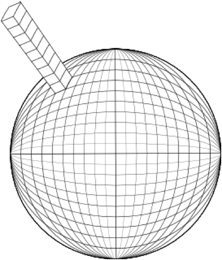
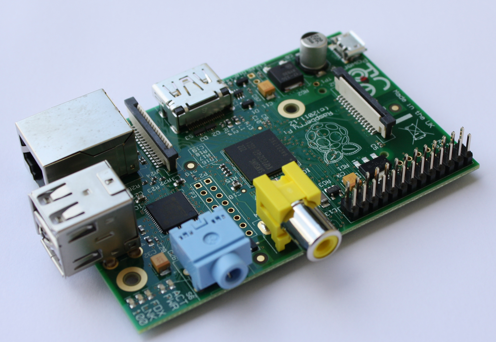

Teaching
I aim allow my research to lead my teaching wherever
possible. This often means working with the latest model and
observational data using cutting edge techniques.
GEO3231: The Ocean and Climate (convenor)
In this
module we focus on the use of World Ocean Atlas and GLODAP
data to understand the physical circulation and carbon cycle
in the global oceans. The module mixes theoretical lecture
courses with hands on computer-based practicals using Python
on our Linux cluster.
GEO1212: Earth System Science: The Future of Our Planet (convenor)
Our
planet has experienced massive change in its history, but
never before have the occupants of the planets consciously
been at the helm of that change. This module aims to provide
you with the fundamental understanding of each of the major
components of our contemporary Earth System, and understanding
of how these link together, required to allow you to
begin exploring the response of our planet to the
anthropogenic pressures it is likely to experience over the
coming decades. This module will provide you with a
mechanistic understanding of the geosphere, biosphere,
cryosphere and ocean and atmosphere and appreciation of how
these fit into the broader Earth System. By doing so, this
module will deliver much of the background understanding
required for a degree in Physical Geography.
GEO2330: Research Methods for Physical Geography: Scientific Computing (convenor of computing component)
This
module provides our students with an advanced training in
research methods used by physical scientists. It is designed
to prepare our students for undertaking research within and
beyond the university environment and seeks to equip them with
key employability attributes for professional careers. The
module explores a range of quantitative methods that physical
scientist use in research and their applications for wider
society. The computing component of this module follows an
innovative independent study and support approach designed
around the Raspberry Pi computer. Our students use the Raspberry Pi to build
temperature and humidity loggers, then integrate the datasets
they collect with sophisticated statistical analysis.
GEO2309: Physical Geography Practice: Research skills
GEO2309 and its sister 3rd year module are focused on the independent dissertation. I have students working on topics from bivalve and coral environmental reconstruction to Climate model carbon cycle and geoengineering analysis.
Previous Modules:
GEO1207: Earth Systems
GEO1210: Investigating Physical Geography: Slapton field trip
GEO1308: Jurassic Coast Field Trip
GEOM410: Key Themes in Climate Change Impacts and Feedbacks
(Masters level)
Summer Schools:
Edinburough Greenhouse Gas Summer School
NCAS Climate Modelling Summer School